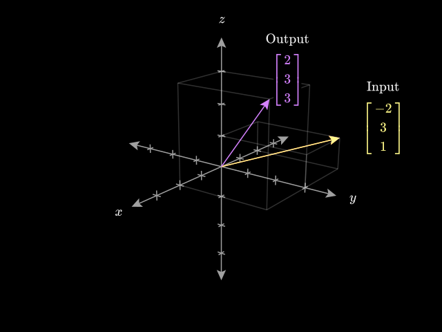
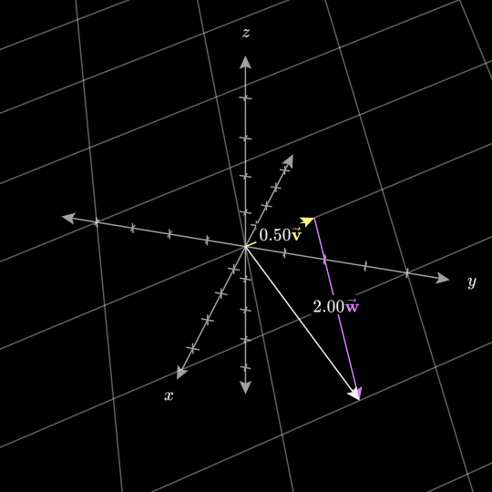
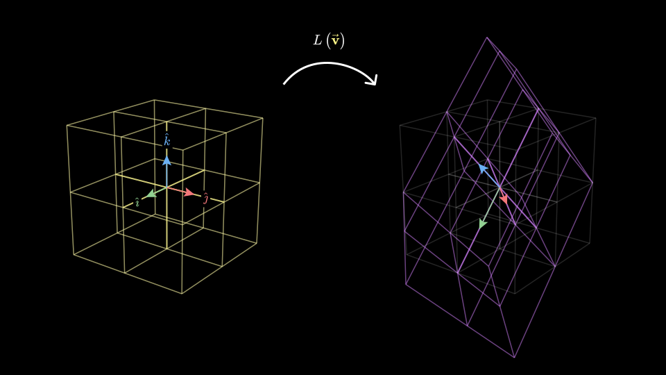

এ পর্যন্ত লিনিয়ার রূপান্তর নিয়ে আমাদের আলোচনা মূলত বর্গাকার ম্যাট্রিক্সের ওপরই চলেছে—টুডি ভেক্টর থেকে টুডি ভেক্টরে রূপান্তরের জন্য দুই বাই দুই ম্যাট্রিক্স, অথবা থ্রিডি ভেক্টর থেকে থ্রিডি ভেক্টরে রূপান্তরের জন্য তিন বাই তিন ম্যাট্রিক্স। এই সিরিজে এতদূর এসে আপনাদের হাতে এমন অনেক ধারণা এসে গেছে, যা দিয়ে আপনারা নিজেরাই এই প্রশ্নটির উত্তর ভাবতে পারেন। তবু আমরা একটু ধীরে ধীরে কথা বলব, যাতে চিন্তার গতি কিছুটা পায়।
প্রশ্নটি হলো—অসম আকারের ম্যাট্রিক্স, যেমন দুই বাই তিন কিংবা তিন বাই দুই ম্যাট্রিক্স, আসলে জ্যামিতিকভাবে কী বোঝায়? ভিন্ন ভিন্ন মাত্রার জগতের মধ্যে কি লিনিয়ার রূপান্তর সম্ভব? epigraph-এর মজার কাহিনিটি ঠিক এই ভুল বোঝাবুঝিকেই নির্দেশ করে: নির্ণায়ক বা determinant শুধু বর্গাকার ম্যাট্রিক্সেরই অস্তিত্ব থাকে—আয়তক্ষেত্রের মতো অসম আকারের ম্যাট্রিক্সের ক্ষেত্রে সেটি সংজ্ঞায়িতই নয়।
উত্তর হলো: অবশ্যই সম্ভব, আর আমাদের জ্যামিতিক ভিত্তি-ভেক্টরের দৃষ্টিভঙ্গি মনে রাখলে বিষয়টি অত্যন্ত সহজ। একটি ম্যাট্রিক্সের কলাম সংখ্যা বলে দেয় ইনপুট স্পেসে কয়টি ভিত্তি ভেক্টর আছে—অর্থাৎ ইনপুটের মাত্রা কত; আর সারি সংখ্যা বলে দেয় রূপান্তরিত ভেক্টরের গন্তব্য কতটি স্থানাঙ্ক দিয়ে বর্ণনা করতে হবে—অর্থাৎ আউটপুটের মাত্রা কত।
মাত্রার মধ্যে রূপান্তর নিয়ে কথা বলা সম্পূর্ণ যুক্তিযুক্ত—যেমন দ্বিমাত্রিক স্পেস থেকে ত্রিমাত্রিক স্পেসে একটি রূপান্তর। আবার যেকোনো রূপান্তরকে রৈখিক বলার শর্তও আগের মতোই: গ্রিডের রেখাগুলো সমান্তরাল ও সমান দূরত্বে থাকবে, এবং মূলবিন্দু মূলবিন্দুতেই পড়বে। শুধু এখন ইনপুট ও আউটপুট আলাদা মাত্রার দুইটি জগতে বসবাস করে।
এখানে বাঁয়ের ইনপুট স্পেস হলো দ্বিমাত্রিক, আর ডানের আউটপুট হলো ত্রিমাত্রিক। আমরা সাধারণত ইনপুটগুলোকে সরাসরি আউটপুটে যেতে দেখি—কিন্তু এখানে তা না দেখার কারণ কেবল ভিজ্যুয়ালাইজেশনের অলসতা নয়; জোর দিয়ে বলা দরকার যে টুডি ইনপুট ভেক্টর আর থ্রিডি আউটপুট ভেক্টর সম্পূর্ণ আলাদা ও অসংযুক্ত দুই জগতের প্রাণী।
এই রূপান্তরকে ম্যাট্রিক্সে লেখার নিয়মও আগের মতোই: দেখুন প্রতিটি ভিত্তি ভেক্টর কোথায় পড়ছে, আর সেই গন্তব্যের স্থানাঙ্কগুলোকে ম্যাট্রিক্সের কলাম হিসেবে লিখুন। এখানে আই হ্যাট $\hat{i}$ পড়ছে $\begin{bmatrix}2\\-1\\-1\end{bmatrix}$-তে এবং জে হ্যাট $\hat{j}$ পড়ছে $\begin{bmatrix}0\\1\\1\end{bmatrix}$-তে—প্রথম কলাম আই হ্যাটের, দ্বিতীয় কলাম জে হ্যাটের গন্তব্য। ফলে ম্যাট্রিক্সটির তিনটি সারি ও দুটি কলাম; অর্থাৎ এটি একটি ৩×২ ম্যাট্রিক্স।
আগের অধ্যায়ের ভাষায় বললে এই ম্যাট্রিক্সের কলাম স্পেস—অর্থাৎ সব ভেক্টর যেখানে পড়ে—হলো ৩D স্পেসের মূলবিন্দু দিয়ে কাটা একটি দ্বিমাত্রিক সমতল। তবুও ম্যাট্রিক্সটিকে ফুল র্যাঙ্ক বলা হয়, কারণ কলাম স্পেসের মাত্রা (২) ঠিক ইনপুট স্পেসের মাত্রার (২) সমান। Two columns → 2D input; three rows → 3 coordinates per landing spot; ফলে ৩×২ ম্যাট্রিক্স মানেই ২ মাত্রা থেকে ৩ মাত্রায় যাত্রা।
ঠিক বিপরীত প্রক্রিয়াটিও চিন্তা করা যায়—একটি দুই বাই তিন ম্যাট্রিক্স আপনি কীভাবে পড়বেন? এখানে তিনটি কলাম, মানে ইনপুট স্পেসে তিনটি ভিত্তি ভেক্টর আছে: আই হ্যাট, জে হ্যাট ও কে হ্যাট। অর্থাৎ যাত্রা শুরু সম্পূর্ণ ত্রিমাত্রিক জগৎ থেকে।
কিন্তু ম্যাট্রিক্সের সারি সংখ্যা মাত্র দুই—অর্থাৎ রূপান্তরের পর প্রতিটি ভিত্তি ভেক্টরের গন্তব্য বর্ণনা করতে কেবল দুটি স্থানাঙ্কই ব্যবহার করা যাবে। তিনটি ভিত্তি ভেক্টরই এসে পড়ে একটি দ্বিমাত্রিক সমতলে। ছায়া ফেলার মতো করে পুরো থ্রিডি মহাবিশ্বকে ওপর থেকে চাপ দিয়ে কাগজের একটি পাতার ওপর চ্যাপ্টা করে ফেলা—এই হলো ২×৩ ম্যাট্রিক্সের মানসিক ছবি।
এখানে মাত্রা হারানো অনিবার্য: দ্বিমাত্রিক সমতলে অবতরণ করা তিনটি ভেক্টর অবশ্যই রৈখিকভাবে নির্ভরশীল। থ্রিডি স্থানের অন্তত একটি পূর্ণ সরলরেখা মূলবিন্দুতে সংকুচিত হয়ে যায়—এই সরলরেখাই নাল স্পেস বা কার্নেল। অর্থাৎ অনেকগুলো আলাদা ইনপুট একই আউটপুটে মিলে যায়, এবং ভুল হবে যদি ভাবি ২×৩ ম্যাট্রিক্সেরও কোনো নির্ণায়ক আছে—epigraph-এর অধ্যাপকের কৌতুক ঠিক এখানেই প্রাসঙ্গিক।
র্যাঙ্ক-নালিটি উপপাদ্যানুসারে $\mathrm{rank}(N)+\mathrm{nullity}(N)=3$ (ইনপুটের মাত্রা)। যেহেতু আউটপুট দ্বিমাত্রিক, তাই $\mathrm{rank}(N)\le 2$ এবং $\mathrm{nullity}(N)\ge 1$—অর্থাৎ অন্তত একটি রেখা অবশ্যই শূন্যে পড়বে। আগের ৩×₂ ক্ষেত্রে ফুল কলাম র্যাঙ্ক ছিল; এখানে আবার ফুল রো র্যাঙ্ক থাকতে পারে, কিন্তু মাত্রা সংকোচন হওয়ায় তথ্য হারানো অবশ্যম্ভাবী।
দ্বিমাত্রিক থেকে একমাত্রিক রূপান্তরের কথাও ভাবা যায়। একমাত্রিক স্পেস আসলে কেবল সংখ্যারেখা—তাই এই ধরনের রূপান্তর দ্বিমাত্রিক ভেক্টর গ্রহণ করে তার বদলে একটি সংখ্যা বের করে দেয়।
এখানে ‘গ্রিডের রেখা সমান্তরাল ও সমান দূরত্বে থাকা’ এই দৃশ্যটি সবকিছু চ্যাপ্টা হয়ে যাওয়ার কারণে কিছুটা অগোছালো; বরং একে এভাবে দেখাই সুবিধাজনক—সমান দূরত্বে রাখা বিন্দুগুলোর একটি সরলরেখা সংখ্যারেখার ওপর প্রক্ষেপিত হওয়ার পরও সমান দূরত্বেই থাকবে। এই রূপান্তরগুলোর একটি লেখা হয় এক বাই দুই ম্যাট্রিক্স দিয়ে, যার দুই কলামের প্রতিটিতে একটিমাত্র এন্ট্রি থাকে—আই হ্যাট কোন সংখ্যায় পড়ে আর জে হ্যাট কোন সংখ্যায় পড়ে, সেটিই সেই দুটি এন্ট্রি।
এই রূপান্তরের ধরনটি তাকে অত্যন্ত অর্থবহ করে তোলে—পরবর্তী অধ্যায়ে আমরা দেখব এটিই হলো ডট গুণনের জ্যামিতিক রূপ: $[u_1\;\;u_2]\begin{bmatrix}x\\y\end{bmatrix}=u_1x+u_2y=\vec{u}\cdot\vec{v}$। একই কারণে ম্যাট্রিক্স গুণন $A_{m\times k}B_{k\times n}$-এ ভেতরের মাত্রা $k$ মিলতে হয়: প্রথম রূপান্তর $B$ যে স্পেসে আউটপুট দেয়, দ্বিতীয় রূপান্তর $A$-কে ঠিক সেই স্পেস থেকেই ইনপুট নিতে হয়।
অসম আকারের ম্যাট্রিক্স কোনো কৃত্রিম হিসাব নয়; এটি স্থান ও মাত্রার রূপান্তরের এক সার্বজনীন ভাষা। আপনি এখন পর্যন্ত যা দেখেছেন তা নিয়ে একটু খেলা করুন—ম্যাট্রিক্স গুণন ও লিনিয়ার সমীকরণ জোটের অর্থ কী হবে, যখন রূপান্তরগুলো ভিন্ন ভিন্ন মাত্রার জগতের মাঝে চলে? পরবর্তী অধ্যায়ে আমরা ডট গুণন ও ডুয়ালিটির এই গভীর সম্পর্কই উন্মোচন করব।
নিচের প্রতিটি চিত্র ছবি ও ভিডিও—দুই মোডেই দেখা যায়। ‘Video’ ট্যাবে চাপ দিয়ে অ্যানিমেশনটি চালান এবং ক্যাপশনে বলা বিষয়গুলো নিজের চোখে খুঁজে বের করুন।




নিচের সমতলে লাল বিন্দুটি টেনে ইনপুট ভেক্টর বদলান এবং স্লাইডার দিয়ে তাকে স্কেল করুন—দেখুন ভিত্তি ভেক্টরের ওপর ভিত্তি করে কীভাবে পুরো স্পেসের রূপান্তর নির্ধারিত হয়। ২D→৩D হোক কিংবা ২D→১D, প্রতিটি কলাম আসলে কোথায় ভিত্তি ভেক্টর পড়বে তা-ই বলে দেয়; স্কেল ও দিক বদলালে আউটপুট স্পেসের আকারও বদলায়। পূর্ণস্ক্রিন বাটনে চাপ দিয়ে ল্যাবটি বড় করে দেখতে পারেন।